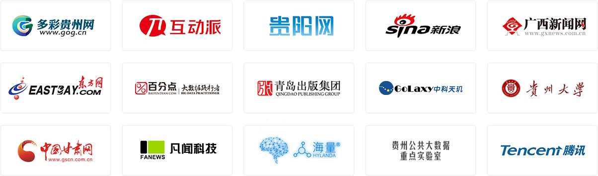

互联网数据采集系统：专业分布式海量互联网数据采集
大数据融合开发平台：全链路、一站式的企业级大数据融合与开发
媒体中央资源平台：一站式解决内容管理的所有难
用户画像分析系统：精准标签化的用户分析与管理
媒体传播洞察系统：专注于媒体行业的传播监测分析
数据分析可视化系统：可视化、敏捷的大数据智能分析
新媒体运营平台：企业级的可视化新媒体运营协同
案例展示
“数聚”中央厨房技术平台
多彩贵州网旨在通过耕云科技为其量身打造的“中央厨房”技术平台建设，推进多彩贵州网的技术升级与产业升级，推动多彩贵州网的媒体融合发展.“多彩黔行”智慧服务平台
打造微信公众智慧服务平台——集旅游新媒体微信矩阵、新闻、活动、互动留言、景区攻略为一体。互联网内容精准提供
多彩贵州网现已成为贵州省最大的互联网媒体企业，不但担负着贵州新闻门户网站的运营工作，同时还兼顾着全省手机报移动客户端和多个微信公众号的运营工作。因此，多彩贵州网的编辑们每日都需要大量的稿件内容来填充满足工作的需求。多彩贵州网媒体产品推介会H5
多彩贵州网2016年5月7日将举办大型产品推介会，推介会集宣讲、展示、体验、互动为一体，让客户通过推介会全面了解公司的产品及服务、企业文化、经营理念、合作方式。热点新闻
为深入贯彻落实省第十二次党代会精神,促进2017年全省大数据发展工作要点落实,经多方征集、认真筛选、综合考量...
多彩贵州网讯 (本网记者)4月14日上午，贵州省委常委、省委宣传部部长、副省长慕德贵到多彩贵州网有限责任公司调...
多彩贵州有多彩”系列网络文化传播活动之“山地公园省·多彩贵州风”启动仪式暨多彩贵州网媒体产品推介会将在贵阳生...
12015年贵州的关键词是什么？肯定少不了“大数据”。我们来做一个大数据统计：在2016年《贵州省政府工作报告》...
合作伙伴
